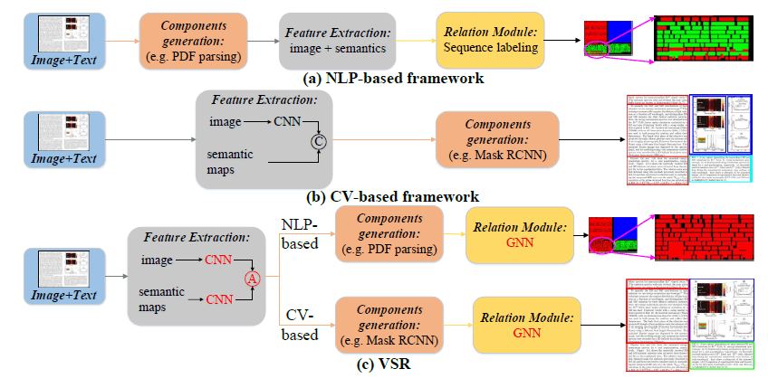
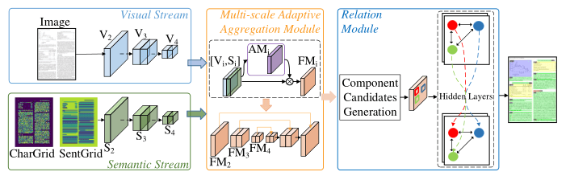

前言
因为下周二要汇报一篇关于 Layout Analysis 的论文，赶紧随便找一篇论文应付下。
写的是真牛逼啊！我看不懂呜呜呜。
在图书馆整了一天半终于把 PPT 肝出来了，哦耶！
资源
讲解视频：VSR -Presentation-Video (ICDAR 2021）_哔哩哔哩_bilibili
源码：
-
DAVAR-Lab-OCR：hikopensource/DAVAR-Lab-OCR: OCR toolbox from Davar-Lab (github.com)
-
VSR：DAVAR-Lab-OCR/demo/text_layout/VSR at main · hikopensource/DAVAR-Lab-OCR (github.com)
似乎比较牛逼的论文都喜欢把代码放在一个他们设计的一个通用框架中，显得很牛逼，然后我就看不懂。
正文
1 Introduction
先说 layout analysis 对理解文档结构至关重要。
目前的方法都不太好使！
- 基于 NLP 方法将 layout analysis 视为 序列标记 任务。
- 但是在 布局建模 中一塌糊涂。
- 一段中的所有文本都应该有一致的语义标签（段落），但其中一些文本被识别为图形标题，这是相邻文本的标签。
- 但是在 布局建模 中一塌糊涂。
- 基于 CV 的方法将 layout analysis 视为 检测 或 分割 任务。
- 语义有限
- 存在 模态融合 不足 和 布局组件之间缺乏关系建模 的局限性。（组件之间缺乏关系建模。文件中存在着牢固的关系。例如，“Figure”和“Figure Caption”经常一起出现，并且“Paragraph”具有对齐的边界框坐标。这种关系可以用来提高布局分析性能。）
我们提出的这个框架将 视觉、语义、关系 相融合。可以同时基于 NLP 和 CV 的方法，非常好使！

- 将文档以图像和文本（Image+Text）的形式作为输入
- 使用双流网络提取视觉和语义特征，有效地组合在多尺度自适应聚合模块中
- 引入图神经网络的关系模块来对候选组件之间的关系进行建模，并生成最终结果。
- 对于基于 NLP 的方法，文本标记作为候选组件，关系模块预测其语义标签。
- 对于基于 CV 的方法，候选成分是通过检测或分割模型（例如，Faster RCNN/Mask RCNN）提出的，并且关系模块生成它们的重新定义的坐标和语义标签。
2 Related Works
Document Layout Analysis
- 其他人的单模态布局严格限制于视觉或语义特征，无法利用来自其他模态的补充信息。
- 其他人的多模态布局太 low 了，我们提出的高级。
Two-stream networks
- 双流网络适合用于多模态，用了！
Relation modeling
- NLP 有关系建模，CNN 很难，我们设计了一个 GNN 支持基于 NLP 或 CV 的方法中的关系建模。
3 Methodology
3.1 Architecture Overview

我们提出的框架由三个部分：
- 双流卷积神经网络（Two-stream ConvNets）
- 视觉流（Visual Stream）处理图像，生成检测或分割模型生成的视觉（Visual）特征（如 Mask RCNN）
- 语义流（Semantic Stream）处理文本，生成语义（Semantic）特征（如文本标记）
- 多尺度自适应聚合模块（Multi-scale Adaptive Aggregation Module）
- 聚合视觉特征和语义特征，产生一组候选组件（component candidates）
- 关系模块（Relation Module）
- 接受这些候选组件，生成最终结果（final results）
3.2 Two-stream ConvNets
Visual stream ConvNet
直接将文档图像作为输入，并使用 CNN 主干（如 ResNet 提取多尺度深度特征），生成视觉特征 。
（1）去掉 CNN 的全连接层，利用卷积层提取 Conv 特征。 将图像进行缩放得到多个不同尺寸的图像，然后分别输入 CNN 提取 Conv 特征并作 feature aggregation，最后将各尺寸图像对应的特征进行合并。论文“Transferring Deep Convolutional Neural Networks for the Scene Classification of High-Resolution Remote Sensing Imagery”使用的是该方法。 （2）采用多个 CNN（filter 大小不同）进行特征提取。 该方法与（1）中的方法相对应，（1）中方法在于改变输入图像尺寸而（2）种方法在于改变 filter 大小。
Semantic stream ConvNet
把文本嵌入映射 作为卷积层的输入一阵卷，最后生成语义特征 。
而 又由 和 组成：，就是字符级和句子级的语义特征。
就是个词嵌入层，将输入层的向量作为输入，将每个词转化成一个更高维度的向量，以便模型可以更好地处理这些信息。
用训练好的 BERT 模型作为 。
3.3 Multi-scale Adaptive Aggregation
在 尺度下，首先将 和 连接起来，然后卷一下 再激活 得到 attention map ：
然后再一阵操作得到聚合的多模态特征：
得到 ，扔 FPN（特征金字塔网络）中继续卷，提供增强的表示。
Feature pyramid network 是 CVPR2017 年的一篇文章，它在目标检测中融入了特征金字塔，提高了目标检测的准确率，尤其体现在小物体的检测上。
3.4 Relation Module
其他人到这边就结束了？它们忽视了布局组件之间很强的关系。
布局组件之间存在很强的关系。例如，同列段落的包围框应该对齐；表和表标题经常一起出现；组件之间没有重叠。利用这种关系可以进一步优化。
-
使用 GNN 建模组件之间的关系，将文档视作一个图 ， 为节点集（表示之前目标检测模型生成的候选组件）， 是边集（两个候选组件之间的关系）。
- 节点集的特征 包含位置坐标 和深度特征 ：， 为第 节点的位置嵌入向量。
- 节点间的关系用自注意力机制来表示：， 从节点特征集 里整。
-
一阵操作更新出新的节点特征 和节点 。
- ，表示这个节点属于 类的概率。
- 就是其回归坐标。
这玩意应用于基于 NLP 的方法也不是不可以。
3.5 Optimization
我们这个模型可以建模为**序列标记（sequence labeling）或对象检测（object detection）**的任务，所以损失函数也不同捏。
Layout analysis as sequence labeling
感觉就是交叉熵损失函数？
Layout analysis as object detection
既要看分类的对不对，还要看框的准不准，至于哪个更重要？自行设置超参数 。
4 Experiments
4.1 Datasets
所有数据集都得提供文档图像和原始 PDF 文件！这样才可以使用多模态技术。
Article Regions
Article Regions数据集用于文本版面分析任务，包含822个文档样本，注释了9个区域类(标题、作者、摘要、正文、图、图标题、表、表标题和参考文献)。标注采用目标检测格式，评价指标为mean average precision(mAP)。
mAP(Mean average precision): 即多类别的AP的平均值
PubLayNet
IBM 最近发布的一个大型文档数据集。
它由 360K 文档示例和 5 个注释区域类组成(文本、标题、列表、图和表)。注释也是对象检测格式。
他们使用与COCO比赛中使用的相同的评估指标，即平均平均精度(AP) @交集除以联合(IOU)[0.50:0.95]。
DocBank
由微软提出的。它包含500K文档样本，包含12个区域类(摘要、作者、标题、方程、图、页脚、列表、段落、参考、节、表和标题)。它提供令牌级注释，并使用F1分数作为官方评估指标。还提供了对象检测标注，支持对象检测方法。